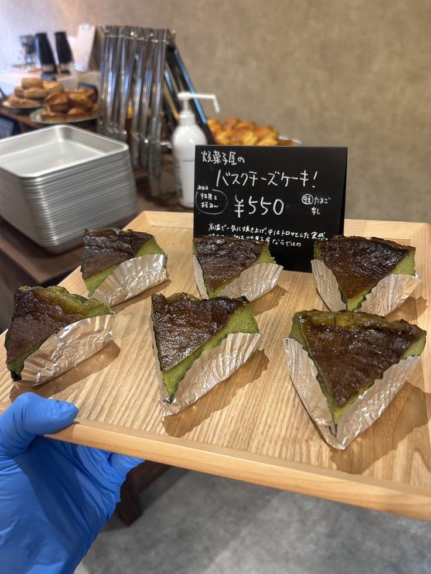

Home
Matcha Basque Cheesecake

For those who are not familiar, Basque cheesecake has an iconic “burnt” caramelized top and it is very creamy on the inside. It tastes like a caramelized cheesecake in one bite. Some liken it to creme brûlée cheesecake!
Ingredients
- 226g philadelphia cream cheese
- 100g granulated sugar
- 2 large eggs
- 1 large egg yolk
- 6g matcha
- 11g cake flour
- 6g cornstarch
- 220ml heavy whipping cream
- 1/8 tsp diamond crystal kosher salt
Instructions
- Preheat the oven for at least 30 minutes. Bring the cream cheese, eggs, and heavy cream to room temperature.
- Gradually mix all the ingredients, one at a time, in a large bowl.
- Pour the batter into a cake pan and bake for 30 minutes.
- Cool completely to room temperature, about 2–3 hours.
- Chill in the fridge, and enjoy!